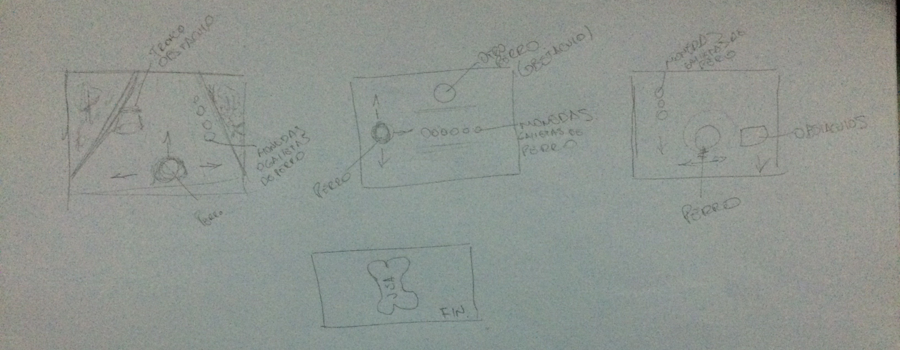
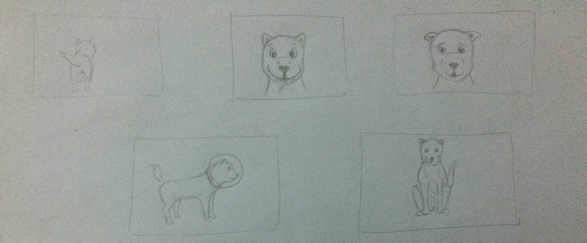
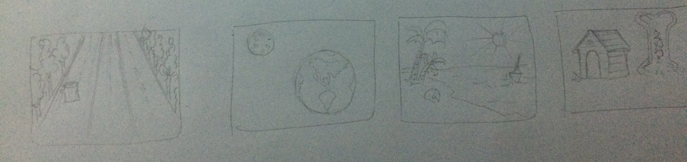

DISEÑO JUEGO 2D realizado por Sebastian Aguilar
1.- Storyboard

Detalles
- Personajes: Perro principal llamado PEPE (Protagonista), Perros obstáculos (diferentes razas).
- Música: En primer nivel la música sera suave con ambiente de parque, Nivel dos ambiente espacial y música electro deep, Nivel tres música alegre ambiete playa, Final música alegre y ambiente casa.
- Acciones: El perro principal en el nivel 1 tiene la opcion de moverse de izquierda a derecha e ir al frente esquivando los obstáculos y recogiendo galletas moneda, Nivel 2 el perso_ naje debe moverse de arriba hacia abajo de igual forma recolectando
las moneda galleta, Nivel 3 tiene la misma logica del primero solo q al haber ya pasado este nivel el perrito vulve a su ksa y encuentra su super galleta gigante.
- Número de jugadores: 1.
- Reglas: El perro principal(pepe) debe evitar los obstáculos e ir recogiendo las galleta monedas.
- Eventos necesarios para generar nuevos eventos: Se deben recolectar 200 monedas galleta para pasar al siguiente nivel, cada vez que el perro recoja 50 monedas el nivel de difucultad irá aumentando y al pasar a la siguiente fase se mantendra el nivel
de dificultad adquirido.
Diseño Personajes

Diseño Escenarios

Referencia Escenarios
Referencias:
{kind=link}
{kind=link}